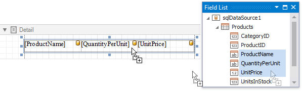
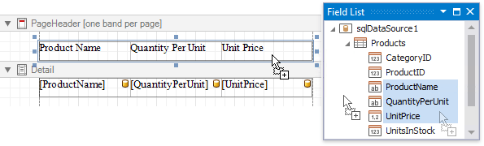
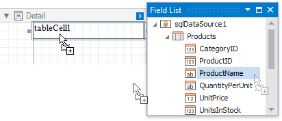
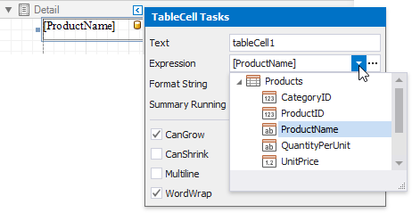
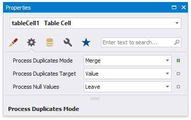

Bind Table Cells to Data
You can create a table control with cells bound to data fields obtained from a report's data source using the Field List. Select data fields by clicking them while holding the CTRL or SHIFT key and drop them onto the Detail band.

Drag and drop the same fields with the right mouse button to create column headers with the corresponding field names.

You can bind individual table cells to data in the same ways as Label controls. Dropping a data field onto an existing cell binds this cell to a corresponding field.

Alternatively, click the cell's smart tag, expand the Expression drop-down list and select the required data field

Clicking the Expression option's ellipsis button invokes the Expression Editor. This allows you to construct a complex binding expression involving two or more data fields.
See the Bind Report Controls to Data topic to learn more about creating data-aware controls.
The Process Duplicates Mode and Process Duplicates Target options enable you to merge cells with identical values.
